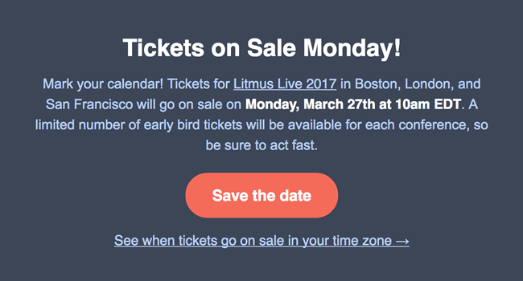

Email Content Management
Write effective calls-to-action
Consider the purpose of the email. Call-to-actions (CTAs) should be
provided if you are trying to drive traffic to a certain point.
Use a command verb for your CTA: Instead of writing 'click here',
use verbs like shop, buy, order, download, register, sign up, or receive
your free [product name]. Tell the reader exactly what action they will
take by clicking that button or link, and what they will gain, e.g. access
to a free resource. This provides added incentive for the reader.
UX expectations for CTAs: If your CTA is a text link then it should
be underlined. Alternatively your CTA can be styled as a button. The goal
is to communicate to the reader that the CTA is clickable.
Use a contrasting colour for your CTA: It should stand out in your
email as an obvious action point. For example, orange is good contrasting
colour against a predominantly blue or grey colour palette.
Consider what platform your CTAs will be viewed on: CTAs should be
easy to click and scaled to a larger size for mobile users. Centrally
positioned CTAs tend to be more successful.
